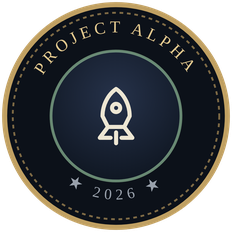
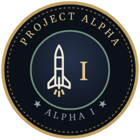
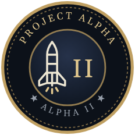

The program
Project Alpha
A long-term rocketry program. Each rocket is designed from first principles, checked in simulation and documented from the first equation to the flight.
Project Alpha · Build log
A 3-inch rocket with two-stage parachute recovery, worked out by hand, checked in simulation and priced to a budget before a single part is bought.

A long-term rocketry program. Each rocket is designed from first principles, checked in simulation and documented from the first equation to the flight.

A 3-inch rocket on a 54 mm I-class motor, kept subsonic and simple so the first flight is a clean, reliable one.

A 4-inch fibreglass rocket on a K-class motor, for about 3,000 m. It was the program's first design, set aside for the smaller Alpha I.
The design case is a club field at 800 m above sea level on a cold spring day, −5 °C. Cold air is dense air, and that means more drag.
P = 101,325 × (1 − 0.0065 × 800 ÷ 288.15)5.256 = 92,076 Pa
ρ = P ÷ (R × T) = 92,076 ÷ (287.058 × 268.15)
ρ = 1.196 kg/m³
Speed of sound: 328 m/s.
Specific impulse is a motor's fuel economy: thrust delivered per unit of propellant. The data comes from the motor's certification.
Isp = Itotal ÷ (mprop × g) = 492.3 ÷ (0.230 × 9.807)
ve = Isp × g = 218.3 × 9.807
Isp = 218 s · ve = 2,140 m/s
A 54 mm I-class motor: 491 N·s, 218 N average thrust, 2.3 s burn.
A rocket has to be moving fast enough for its fins to work before it leaves the launch rail.
TWR = T ÷ (m × g) = 218.6 ÷ (2.687 × 9.807)
Limit: at least 5
Rail exit, stepped through the thrust curve on a 1.83 m rail
TWR 8.3 · 17 m/s off the rail
Above the 15 m/s the design must reach. The simulation gives 17.8 m/s.
Tsiolkovsky's equation gives the speed the motor could add with no gravity and no air.
Δv = ve × ln(m0 ÷ m1) = 2,140 × ln(2.687 ÷ 2.457)
Ideal Δv = 192 m/s
Gravity and drag take 35 m/s
156 m/s at burnout (Mach 0.48)
The flight stays well below the speed of sound.
The centre of pressure has to sit behind the centre of gravity, by one to two body diameters.
Centre of gravity: 945 mm from the nose tip
Centre of pressure (Barrowman): 1,082 mm
Margin = (1,082 − 945) ÷ 79.4
1.7 calibres
Inside the 1.0 to 2.0 limit, with the motor loaded.
Max-Q is the moment the air pushes hardest on the airframe, just before burnout.
q = ½ × ρ × v² = 0.5 × 1.173 × 157.2²
Fin flutter speed: 618 m/s
14.5 kPa at 187 m
The fins would flutter at about four times the rocket's top speed.
The small parachute opens at apogee and brings the rocket down fast, so it doesn't drift far.
v = √(2 × m × g ÷ (ρ × Cd × A))
A = π × 0.229² = 0.164 m² (18 in)
v = √(2 × 2.457 × 9.807 ÷ (1.166 × 0.75 × 0.164))
18-inch drogue · 18 m/s
Sized with a cautious drag coefficient of 0.75.
The main parachute opens at 244 m (800 ft) and slows the rocket to a gentle landing.
A = π × 0.762² = 1.824 m² (60 in)
v = √(2 × 2.457 × 9.807 ÷ (1.196 × 0.75 × 1.824)) = 5.4 m/s
KE = ½ × m × v² = 0.5 × 2.457 × 5.43²
60-inch main · 5.4 m/s · 36 J
Under the 6 m/s landing limit. The simulation gives 5.2 m/s.
Checked two ways: by hand and in OpenRocket. The two agree within 4%, and the simulation was re-run with every estimated mass 10% heavier and 10% lighter.
A long-term rocketry program, starting with a rocket to learn on. The first design was a 4-inch rocket, now the Alpha II concept.
A smaller 3-inch first build, worked by hand and flown in OpenRocket.
Every component matched to a real part and priced. Nothing bought.
Checked against certification data, the motor figures in my hand calculations were wrong and the simulated motor was out of production. A new motor was chosen and the recovery resized.
Pricing every part and itemising every mass changed the airframe, the nose cone, the parachutes and the fins. The hand calculation, now a script, agrees with the simulation within 4%.
The step-by-step build, rewritten for the first version.
The certification route is confirmed, and the parachutes turned out to have about twice the drag the recovery was sized with, so the landing should be gentler than calculated. Next season's launch dates are not out yet.
The parts are being settled, then the whole design is reviewed once more before anything is ordered.
Airframe, fin can, avionics bay and recovery harness.
Planned for a club launch in Alberta, once certification and launch authorization are in place.
A larger 4-inch build, using what Alpha I teaches.